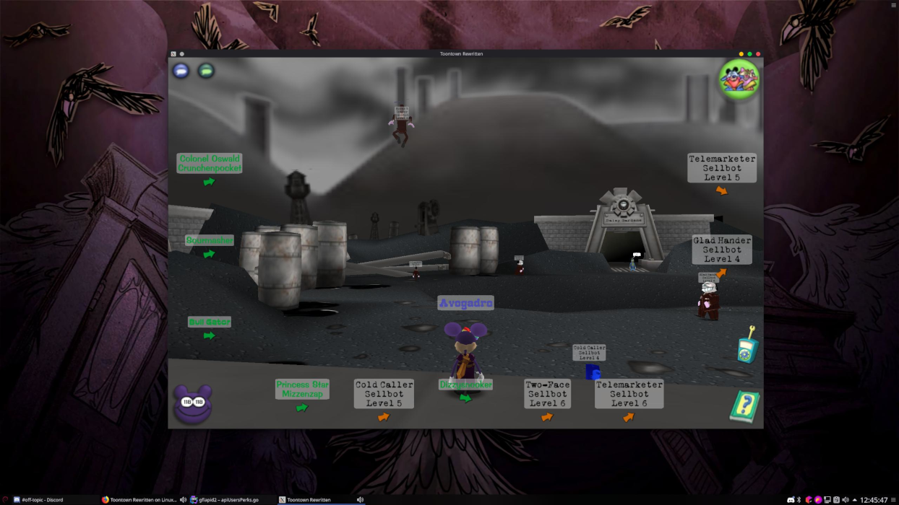

This unofficial flatpak provides an easy way to run Toontown Rewritten on any Linux-based system that supports flatpak.
If your system does not already have it installed, typically you can install Flatpak by installing the 'flatpak' package from your distro's repositories. For more details on installing flatpak on your distro, see here.
To get Toontown Rewritten, all you need to do is run the following command (Assuming you've got flatpak installed).
flatpak --user install https://www.xytime.xyz/flatpaks/ttr/toontown.flatpakref
An icon for Toontown Rewritten should automatically be added to your system menu. Do note that you need to restart your session to get it to show up if you just installed Flatpak.
If you ever find yourself needing to access the game files, you will find them in ~/.var/xyz.xytime.Toontown/data/toontown-rewritten/
I may periodically push updates to fix issues or add features to the flatpak. You can get the latest version using flatpak --user update.
This app requires the following permissions
Code cleanup, fix the black right-click menu for the news Window, and only try to set the wmclass 3 times instead of every 1.5 seconds.
Updated the CDN URL to cdn.toontownrewritten.com and the mirror to download.toontownrewritten.com
Added a small binary to set the WM_CLASS of Toontown Rewritten to 'toontown' so that most DEs can display the icon correctly on the window list. Also uses the new logo now.
Added a missing dependency, xsel, which is needed for copying some text in-game.
Rewrote _obtainFresh(). The previous implementation was suboptimal and actually slowed download speeds by quite a bit. This version fixes that.
Fixed an issue with some wayland based desktops that prevented some users from moving the launcher window
Fixed Launcher and game not showing up under the same icon for some desktop environments.
Rebuilt the flatpak with webengine included for news. Also added different sized icons so it appears correct on all desktop environments.
Please email contact@xytime.xyz for concerns/issues regarding the flatpak. Email support@toontownrewritten.com for concerns/issues regarding the game.